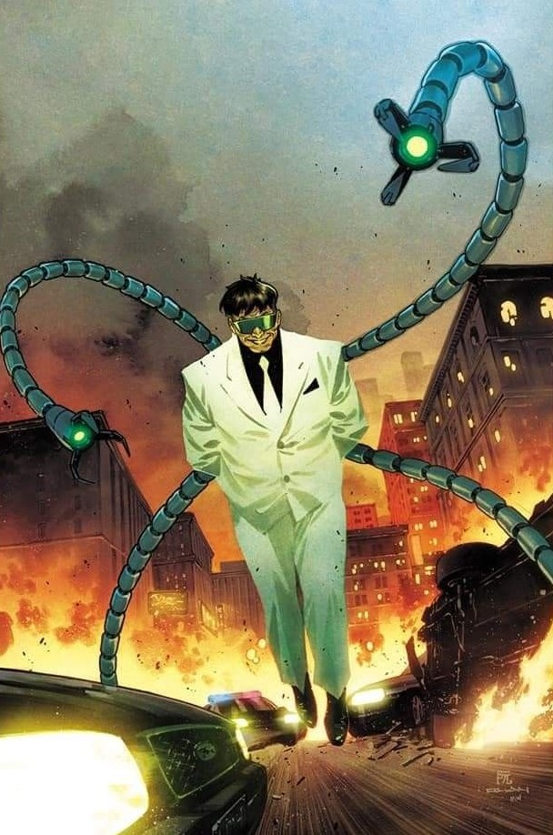

Conheça alguns dos principais da saga Homem-Aranha.
Homem-Aranha
O Homem-Aranha é o alter ego de Peter Parker, um jovem que ganha poderes depois de ser mordido por uma aranha radioativa. Ele usa suas habilidades para proteger Nova York, enfrentando vilões enquanto lida com a vida pessoal.
Miles Morales
Miles Morales é um adolescente do Brooklyn que foi mordido por uma Aranha Geneticamente Alterada e se tornou o Homem-Aranha da Terra-1610 após a morte de Peter Parker.
Mary Jane
Interesse romântico de Peter Parker, conhecida por sua beleza e sua relação com o Homem-Aranha.
Duende Verde
Um dos maiores inimigos do Homem-Aranha, conhecido por sua insanidade, inteligência e armas mortais.

Doutor Octopus
Vilão com braços mecânicos que lhe conferem grande força e inteligência. Um dos maiores inimigos do Homem-Aranha.
Venom
Inimigo que se funde com um simbiótico alienígena, dando-lhe habilidades semelhantes às do Homem-Aranha, mas de forma mais destrutiva.
Lagarto
Amigo de Peter Parker e cientista que se transforma em um monstro reptiliano após um experimento que deu errado.
Homem-Areia
Um dos vilões responsáveis pela morte do Tio Ben, ele encerra a trilogia fazendo as pazes e sendo perdoado pelo Homem-Aranha.
Electro
O vilão ganhou poderes de eletricidade após cair em um tanque com enguias e acaba saindo à caça do Homem-Aranha por se sentir traído pelo herói.